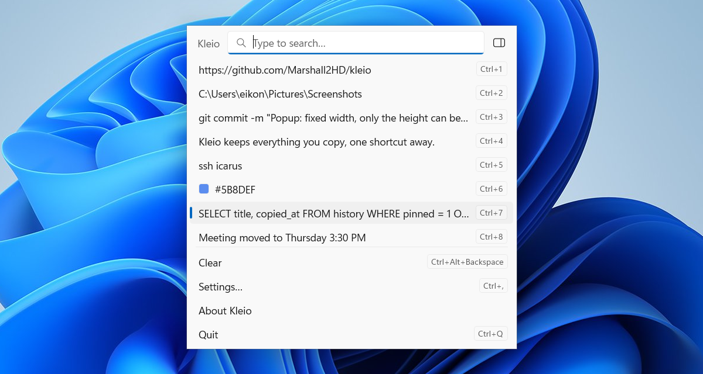

Everything you copy, one shortcut away.
Kleio keeps your clipboard history on Windows 11. Press the shortcut, type a few letters, paste. Free, open source, and native to Windows.
WinShiftC
Free and MIT licensed. Windows 10 2004 or later; built for Windows 11. x64 and ARM64.
Your hands stay on the keyboard
Every action has a key. These are the defaults; the open, pin, delete and preview shortcuts can be changed in Settings.
- WinShiftC
- Open Kleio wherever you are. Optionally take over WinV.
- Just type
- Search exact, fuzzy, by regular expression, or mixed.
- Enter
- Copy the selected item back to the clipboard.
- AltEnter
- Paste it straight into the app you came from.
- CtrlSpace
- Preview the full text, source app and copy times.
- AltP
- Pin an item to the top with its own letter.
- Shift↑↓
- Paste stack: select several, then each CtrlV pastes the next.
- Ctrl1…9
- Copy by number, or hold Alt instead to paste.
Small, native, private
A native app that follows Windows conventions and stays out of the way.
Native Windows 11
WinUI 3 and C++/WinRT. Acrylic popup, Mica settings, light and dark theme, Segoe Fluent icons.
Stays on your PC
History lives in a local SQLite file. Copies that password managers mark as private are never recorded.
Light on resources
Event-driven clipboard monitoring, no polling. It sits in the notification area until you need it.
Scriptable
kleio --get 3, --select, --delete and --clear work from PowerShell and scripts.
Ignore rules
Skip copies by app, by clipboard format, or by pattern, such as six-digit one-time codes.
43 languages
Translated into 43 languages, with auto-updates from GitHub Releases.
Looks like it belongs
Your recent copies, numbered for quick access, in a Fluent popup that follows your light or dark theme.

Install
- Download the
.msixfor your PC, x64 or ARM64, from GitHub Releases. - Open it and choose Install.
- Press WinShiftC and copy something.